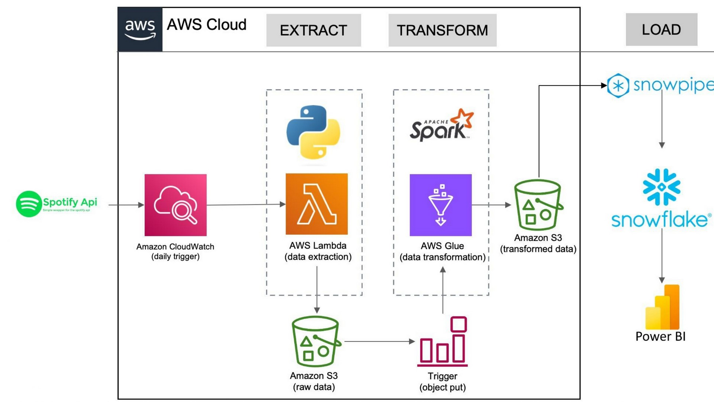
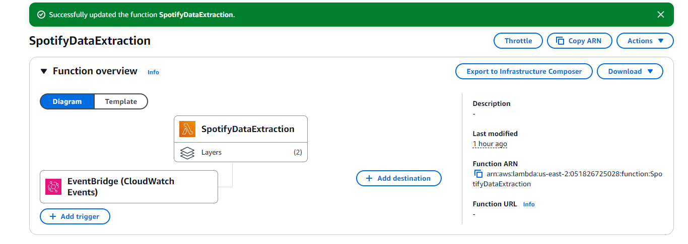

Scalable Data Pipeline for Spotify Analytics Using Apache Spark
Automated ETL Pipeline for Spotify Data Using AWS, Apache Spark, and Snowflake
Designed and deployed a fully automated ETL pipeline that extracts complex JSON data from the Spotify API, processes it using PySpark on AWS Glue, and loads it into Snowflake for analytics. Leveraging AWS Lambda, S3, and Spark optimizations, the pipeline ensures efficient data transformation, reducing processing time and enabling seamless visualization in Power BI.
Enables real-time analytics on Spotify data, helping businesses track trends and user engagement.
Provides structured, high-quality data in Snowflake, facilitating advanced insights and reporting in Power BI.
Operational Efficiency & Cost Optimization
Automates the entire ETL process, reducing manual effort and minimizing operational overhead.
Optimized Spark jobs and partitioning techniques improve processing speed, cutting cloud compute costs.
Scalable & Future-Ready Architecture
Built on AWS and Snowflake, ensuring easy scalability for growing data volumes.
Modular design allows integration with additional data sources and analytics tools as business needs evolve.
Project Overview
This project presents a sophisticated ETL pipeline architecture specifically designed to ingest, transform, and load Spotify playlist data into a Snowflake database for comprehensive analysis and visualization.
The pipeline capitalizes on a synergistic integration of AWS services, Snowflake, and Power BI to automate the intricate processes of data handling. By leveraging Apache Spark within the transformation phase, the pipeline achieves an unparalleled capacity for handling large-scale data with efficiency and scalability.
This methodological approach ensures high performance and adaptability to complex data structures, making it an exemplary model for data engineering workflows.

Tools Used :
Spotify API
AWS Lambda
Amazon CloudWatch
Amazon S3
AWS Glue
PySpark
Snowflake
Snowpipe
SQL
Power BI
Python
JSON
CSV
AWS IAM Roles
AWS Storage Integration
Key Features
Automation: Entire pipeline (ETL) is automated with triggers from CloudWatch and Snowpipe.
Scalability: Using AWS Lambda, Glue, and Spark allows handling large volumes of Spotify data efficiently.
Real-time Data Updates: Snowpipe enables near-real-time updates of data in Snowflake.
Customizable Transformations: Transformation logic is adaptable to different data structures or additional requirements with Spark providing the flexibility to process complex and nested data efficiently.
1. Data Extraction: AWS Lambda
A Spotify API is used to extract raw playlist data in JSON format. The connection is established using SpotifyClientCredentials, where client credentials (Client ID and Secret) are securely stored in the Lambda environment variables.
Key Features of lambda_extraction_function.py:
Retrieves playlist details using the Spotify API.
Saves the raw JSON data into an Amazon S3 bucket.
Triggers an AWS Glue Job to process the extracted data.
This function is triggered every midnight using Amazon CloudWatch.

2. Data Transformation: AWS Glue
The transformation process is implemented in the spark_transformation.py script using PySpark with Glue Context. Spark is a suitable choice for this transformation process due to its ability to handle large-scale data efficiently and perform distributed computing, which makes it ideal for processing and transforming extensive JSON data structures.
Steps Performed:
Raw Data Processing: The script processes the raw JSON data to extract details about albums, artists, and songs.
Custom Functions: process_album: Extracts album_id, album_name, release_date, total_tracks, and album_url. process_artists: Extracts artist_id, artist_name, and artist_url. process_songs: Extracts song_name, song_id, duration_ms, song_url, popularity, and links with corresponding albums and artists.
Transformations:
Flattening nested JSON structures using explode, which simplifies the processing of complex JSON structures, making the transformation efficient and scalable.
Formatting the added_at field to a standard DATE format.
Output: Transformed data is saved back into S3 under transformed_data/ in separate folders (album, artists, songs) as CSV files.
3. Data Loading: Snowflake
A Snowflake SQL script (snowflake.sql) creates a database (spotify_db) with tables for albums (tbl_album), artists (tbl_artists), and songs (tbl_songs).
Snowpipe Integration:
An S3 bucket is integrated with Snowflake using Storage Integration (s3_init).
A Snowpipe is configured to ingest transformed data automatically into the Snowflake tables.
4. Data Visualization: Power BI
The Snowflake tables are connected to Power BI, where detailed visualizations are created.
Top 10 artists by Song Popularity
How song popularity trends monthly?
Song duration vs Song Popularity
These visualizations provide valuable insights into Spotify data trends.
 Scalable Data Pipeline for Spotify Analytics Using Apache Spark
Scalable Data Pipeline for Spotify Analytics Using Apache Spark